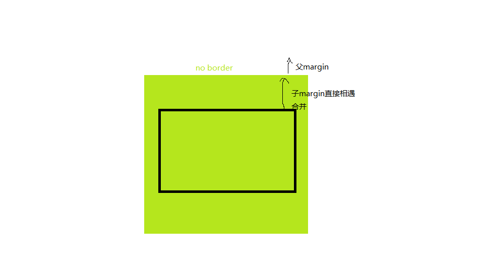

margin border padding content
第一点要注意的是border的重要性,border相当于定义了元素的边界,margin属性也是根据border的位置去生效的.下面有一个margin使用不当的例子
可以看到最终的行为不是子div根据父div的顶部向下marin 50px,而是父div直接向下margin了50 px.如果我们给父div设置一个border 问题就解决了
出现这个问题的原因是 外边距合并,即如果两个垂直外边距(margin)相遇时,会合并成一个两者间较大的那个.具体行为如下:
- 也就是说当一个元素出现在另一个元素上面时，第一个元素的下外边距与第二个元素的上外边距会发生合并。
- 当一个元素包含在另一个元素中时（假设没有内边距或边框把外边距分隔开），它们的上和/或下外边距也会发生合并。
我们遇到的就是第二种情况,由于父div没有padding且没有border,使得子div的margin与父div的margin合并在了一起 且最终应用在了父div上 如下图

解决方案：https://www.jianshu.com/p/610a138ba81d 其中设置border/padding 使用绝对定位较好理解,overflow与float暂时没有接触,忽略.